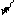

1996-02-29
 En komputila reto, datumpeco transmetata en la
kanala tavolo; t.e. pakaĵo de la reta
tavolo post enkapsuligo. Kp datagramo.
En komputila reto, datumpeco transmetata en la
kanala tavolo; t.e. pakaĵo de la reta
tavolo post enkapsuligo. Kp datagramo.
Angle: frame
France: cadre, schéma (1); trame
Germane: Frame; Rahmen, Datenübertragunsblock, DÜ-Block
Ruse: фрейм (1); кадр, конверт; рабочая
секция; рамка
1998-03-21
Speco de energi-dependa memoro, en kiu la registraĵoj post kelka tempo kadukiĝas kaj sekve necesas periode ilin refreŝigi.
Angle: dynamic memory
France: mémoire dynamique
Germane: dynamische Speicher
Ruse:
динамическая память
1996-02-29
 Maniero aranĝi objektojn (ekz-e fenestrojn) sur la ekrano tiel ke neniu kovru parton de alia.
Angle: tiling
1999-03-31
En Paskalo, rezervita vortosimbolo prezentanta kajon.
Angle: and
France: et
Germane: und
Ruse: и
1996-02-29
En la pliopo de la homaj lingvoj (kaj ankaŭ en Esperanto) la konjunkcio aŭ estas plursenca:
Angle: and/or, inclusive
or
Ruse: логическая сумма, включающее
ИЛИ
1998-03-07
Portebla komputilo, kies dimensioj (kaj komputivo) estas inter tiuj de tekkomputilo kaj poŝkomputilo — do, proksimume kiel kajero aŭ A5-folio; ekz~-e Cassiopeia FIVA (23×20×2 cm, maso 990 g).
Rim. La vorton «kajerkomputilo» proponis Tani
Hiroyuki en s.c.e. (2002-04-22, Message-ID:
Angle: subnotebook 2002-07-30
Noto. La radiko
kaj- havas ankaŭ aliajn sencojn [PIV1]:
Angle: conjunction 1996-02-29 «… 3 Trovi kvanton, per
aritmetiko, matematikaj tabeloj aŭ maŝinoj, el aliaj donitaj kvantoj: …
kalkuli la distancon inter la tero kaj la suno; … 4 Operacii per
nombroj, literoj aŭ aliaj matematikaj simboloj, por trovi alian serĉatan
nombron aŭ matematikan esprimon» [PIV1]. Angle: calculate, reckon; count 1996-02-29 Angle: calculator 1998-04-10 La koncepto pri
dedukta sistemo kapabla generi ajnan komputeblan aron da vortoj estas
ŝuldata al Post (1943). Angle: calculus
1996-02-29 Subvariablo, speco de variablo, esprimo indikanta kampon de rikordo. En Paskalo
kampatingo havas la formon de rikorda variablo (la bazo) sekvata
de punkto (la kampopunkto) sekvata de la nomo de la kampo:
Tiele, al la variabloj,
difinitaj en la rikorda ekzemplo (Rikordoj en Paskalo), oni povas
apliki kampatingojn:
La lasta kampatingo implicas, ke
bildeto.f=cirklo. Angle: field designator 1996-02-29
Rekursia nocio, uzata en Paskalo por difini rikordotipon. Kamplistoj povas ingiĝi tra okazoj rikordaj. Angle: field list
1996-02-29 Angle: field 1996-02-29 Angle: data link layer 1996-02-29 Specialcela procesoro plenumanta eneligon inter la ĉefmemoro kaj periferiaĵo. Angle: (input-output) channel
(2) kanal*o
(komunikada) — Aparataro realiganta sendependajn datumtransmetojn de sendilo al ricevilo per
fizika lineo (unu lineo povas priservi multajn
kanalojn). Angle: channel (unudirekta), circuit (ambaŭdirekta)
Maksimuma amplekso de datumoj trakteblaj per komputa ekipaĵo: la kapacito
de memororgano (ĉefmemoro, datumportilo) indikas kiom da signoj (aŭ bajtoj) ĝi
povas samtempe enteni; la kapacito de kanalo estas
maksimuma nombro de bitoj, kiujn ĝi kapablas
transmeti dum tempounuo (vd baŭdo, traigivo); la kapacito de ĉelo estas ĝia longo (la nombro de bitoj). Angle: capacity; bandwidth
1996-02-29 Noto. En verkado, la formo kapeto estas oportuna. Sen
plia precizigo kapo aspektas komike (ekz-e, en la ofta «stirado de
kapoj»); magnetkapo ne ĉiam estas ĝusta (ĉu la kapetoj de Turinga aŭtomato estas magnetaj?),
lega-skriba kapo estas embarase longa. La uzo de -et por
neprigi la terminecon laŭas la respondan rusaĵon; evidente, la funkcio de
-et en tiu derivaĵo proksimiĝas al tiu de -um.
Angle: read/write head 1996-02-29 Angle: face
1996-11-05 Registri surekranigitan bildon (la tutan ekranon aŭ ties areon); ekz-e en Vindozo
la klavo PrintScreen (printu ekranon) enpoŝigas la tutan ekranon, kaj tio ebligas elpoŝigi ĝin aliloke ekz-e en grafika redaktilo. La rimedo por fari tion estas
bildokaptilo; la rezulto, kaptaĵo. Angle:
capture, snapshot 1996-11-23 Estu a subaro de baza aro
b; tiam karakteriza funkcio de a rilate al b estas
tia ka: b→{ 0, 1 }, ke
ka(x) = SE x∈a TIAM 1 ALIE 0 La
nocio «karakteriza funkcio» servas i.a. por difini decideblajn arojn. Kp svaga aro. Angle: characteristic
function 1996-02-29 Bulea vektoro (bitĉeno) prezentanta aron el finia universo. Se la universo konsistas el n
elementoj e₁, e₂,…,en, tiam ajna aro A
prezenteblas per n-bita vektoro kies i-a elemento veras SSE
ei∈A. Per karakterizaj vektoroj oni povas realigi
paskaleskajn artipojn en Ada, kiel estas farite en
ekzempla pakaĵo (Genera
programpeco en Ada). Angle: characteristic vector
1996-02-29 Noto. Mankas konvinkaj ekzemploj por pruvi, ke la pli simpla
kaj fundamenta signo ne sufiĉas. Iuj pretendas, ke karaktro estas la
interna prezento de signo (do, kodono; cetere, tiuj samaj personoj kutime emas uzi
«diĝito»n kun signifo nedistingebla disde ilia «karaktro»); por aliaj
(ekz-e R. Eichholz) karaktro estas videbla signo. Ni opinias la vorton
«karaktro» superflua, malbela kaj malpli produktiva ol signo (kp
karaktraro — signaro); tamen iuj fakuloj ĝin preferas.
1996-02-29 Por finia sekvenco da aroj
A₁, A₂, …, An ĝia Kartezia [PIV1] produto, simbole
A₁×A₂×…×An estas la
aro de ĉiuj n-opoj (a₁, a₂, …, an),
kies ai∈Ai por ĉiuj 1≤i≤n.
Angle: Cartesian product
1996-02-29
Parto de kartujo en kiun oni instalas cirkvitkarton. Kartingo havas foldojn kaj
kontaktaĵojn. Angle: card slot, socket
1996-02-29 Vd trukarto, cirkvitkarto. Angle: card; board
1996-02-29 «4 Cilindra ujeto, entenanta produktaĵon kaj enmetota en la
koncernan aparaton: inka kartoĉo por fontoplumo; kartoĉo por
fandogardilo» [PIV1]. Noto. La nocio esence proksimas
tiun de kasedo; mi prefere uzas «kartoĉo»n kiam
temas pri likva aŭ pulvora konsumaĵo —
ekz-e pri farbopulvoro por lasera printilo, — kaj «kasedo»n, pri
protekta skatoleto de magneta rubando ktp. Angle: cartridge
1996-02-29 Kartingaro, parto de ĉasio en kiun
oni instalas cirkvitkartojn. Kartujo havas
konduktilaron, interkonektantan la kartojn. Kp ĉefkarto. Angle: card cage
1996-02-29 Ω Disciplino de vicigo laŭ kiu la procezoj ricevas po temponon laŭ antaŭfiksita cikla ordo. Kp prioritata vicigo. Angle:
round robin 1999-12-11 Ujo destinita por protekti kaj pli facile manipuli
enkonstruitan datumportilon aŭ
aranĝaĵon, ekz-e kasedo de magneta rubando, de magneta disko aŭ lumdisko,
de integra cirkvito, de printila
inkrubando. Kp kartoĉo. Noto.
«Kaseto» evitindas pro la kalembura misanalizeblo «kas·eto».
Angle: cartridge, cassette 1996-02-29 Principo de modulema programado, laŭ kiu ĉiu modulo disponigas abstraktaĵojn, detalojn de
kies realigo oni ne nur rajtas, sed eĉ devas kaŝi kontraŭ la klientoj
(kontraŭ la uzantaj moduloj). Tio faciligas vartadon de la programaro, ĉar la manipulado de la
kaŝitaj detaloj estas farebla nur per la rimedoj de la enkapsuliganta
modulo; kaj krome, tio ebligas pli facilan modifadon de la realigo, kiun oni rajtas fari sendepende je la
ceteraj moduloj. Kp enkapsuligo.
Angle: hiding 1996-02-29 Ω
Dosiero kies nomon la rimedoj por ekzameni dosierujojn normale ne aperigas en
la listoj de ties anoj; ekz-e, en Unikso, la dosieroj kies nomo komenciĝas
per punkto: .emacs, .profile, .login (do, konsistas el nura finaĵo) ktp; en aliaj operaciumoj tian konduton
povas regi speciala dosieratributo. Angle: dot file, hidden file
2003-07-17 Relative negranda rapidega
memoro (plurfoje pli rapida ol la ĉefmemoro) uzata kiel bufro inter la ĉefmemoro kaj procesoro. En la kaŝmemoron trafas la
statistike plej ofte (kaj «dense») uzataj datumoj kaj provizoraj rezultoj
de la operacioj. Vd memorhierarkio. Noto. La
angla termino laŭvorte signifas «kaŝejo», «ekspedicia tenejo». La
metaforo per si mem ne estas tre elvokiva (kvankam la kaŝmemoro ja estas io
kaŝita disde la uzulo), sed espereble helpos la proksimeco de la
sonformo. Angle: cache (storage)
1996-02-29
Rim. La formo dosierujo estas preferinda, se temas
pri hierarkia (arba) aranĝo; tiam katalogo estas indekso de aparta dosierujo (kaj komando eliganta
la respondan nomliston); male, en «plataj» dosieradministriloj (kie ĉiuj
dosieroj apartenas al unu sama nivelo) oni ofte preferas la vorton
«katalogo» ol «dosierujo»n. Angle: catalog, catalogue
1996-02-29 2005-07-10 1996-09-06 Mallongigo de kilobajto; 1 Kbajt = 1024 bajt. (Vd kilo-.) Angle: Kbyte
1996-02-29 Mallongigo de kilobito; 1 Kbit = 1024 bit. (Vd kilo-.) Angle: Kbit 1996-09-06 Simile pri mikroprogramaro.
Angle: kernel (1,2), nucleus (2)
1998-08-06 Rimedo per kiu aplika programo aŭ skripto postulas servon de (la kerno de) operaciumo,
precipe tiujn disponeblajn nur en privilegia reĝimo. Angle: system
call, supervisor call
1998-08-01 Metaforo uzata por priskribi la
ciferecan universon formatan de komputilaj
retoj (kaj precipe de la Interreto),
«Retlando». Iam en la Reto aperis «Deklaro pri la sendependo de
Kiberkosmo». Noto. De fikcia termino inventita de
William Gibson en lia romano «Neuromancer». Angle: cyberspace
1996-02-29 «cibernetik·o Noto.
Malgraŭ la granda aŭtoritato de PIV1, konsiderinda pliopo de esperantistoj
preferas kibernetikon ol cibernetikon; tiu prefero havas eĉ
teorian pravigon [Rei87]:
Angle: cybernetics
1996-02-29 Malgraŭ la normoj, en
komputado tiu obloprefikso kutime signifas
1024 (t.e. 210): kilobajto, kilobito (mallonge:
Kbajt, Kbit). Por apartigi la «duuman» prefikson oni plej ofte
skribas ĉefliteran K; alia eblo estas «Kibajt», «Kibit». 1996-09-06
Mezurunuo de memorkapacito, 1024 bajtoj (Kbajt, Kibajt).
Angle: kilobyte
1996-02-29 Mezurunuo de memorkapacito, 1024 bitoj; mallonge «Kbit» (Kibit).
Rim. Se temas pri datumtransmeto, ofte estas subkomprenata
«dekuma milo»: 1 kbit/s = 1000 bit/s.
Angle: kilobit 1996-02-29
La ĉefa Slavona alfabeto, tradicie (kaj eble, malĝuste)
atribuata al s-ta Cirilo (Konstanteno la Filozofo, m. 869-02-14 en Romo). Kp
glagolico. El kirilico devenas la naciaj skriboj (literoj Cirilaj) de la ortodoksaj slavoj
(ĝis 1860, ankaŭ de la rumanoj) kaj de kelkaj neslavaj popoloj de
eks-Sovetio. Kirilico plu estas uzata en la tekstoj de ortodoksa kulto,
historiaj kaj filologiaj; la nuna formo de la literoj estas ŝuldata al la
reformo de Petro la Granda (1708), kiu enkondukis t.n. «civilan tiparon»
(ruse «гражданский шрифт, гражданка»),
proksimigitan al la klasika fasono.
Angle: kirillitsa, Cyrillic writing
1996-04-06
Premi (klavon, butonon de muso) kaj
relasi (ekz-e por elekti). Noto.
«Klaki» estas netransitiva; la transitiva formo estas «alklaki». Oni povas «alklaki piktogramon» (klaki sur la piktogramo).
Angle: click
1996-02-29
Tipara familio en kiu ĉiuj tiparaj fasonoj estas derivitaj el unu klasika fasono baza. Kvankam la kursivo en klasika familio tradicie havas iom
apartan desegnon, tamen ankaŭ ĝi kutime estas harmoniigita kun la ceteraj
fasonoj. Oni distingas diversajn specojn de la klasikaj familioj (vd sub tipara stilo). Angle: roman
1996-02-29
Noto. En paleografio kaj en la germana, rusa,
ĉeĥa, pola kaj pluraj aliaj lingvoj klasika fasono estas nomata
«antikva», ĉar en la unuaj jarcentoj post la invento de la presarto ĝi
estis uzata por originallingvaj eldonoj de la greka-latinaj antikvaĵoj,
kontraste al la tiamaj «literoj modernaj» (tiuj estis la Mezepokaj
stiloj, ekz-e la «gotika» frakturo). Fakte
klasika fasono ne estas Romia: ĝiaj ĉefliteroj havas la formon de la literoj el la
antikvaj monumentaj ŝtonsurskriboj, kaj la etliteroj sekvas la Karolidan minusklan skribon;
ĝi ne estas romanika (angle Romanesque architecture, style);
kromajn konsiderojn vd sub Rom(an)a
fasono. En la PIV1-a listo da «tipoj» aperas kaj «antikva», kaj
«romana», tamen sub «antikva» mankas koncerna difino. La formon
«antikva» ni malpreferis pro eventuala konfuzo kun la angla old
black (kiu estas ĝuste la malo, vd gotika)
aŭ old face, antiqua face (kiuj estas tre specialaj okazoj, vd tipara stilo). La adjektivo klasika
feliĉe kombinas la ideon pri «normala formo» kun tiu pri la greka-latina
antikveco. Angle: roman type
1996-02-29 En objektema programlingvo, esprimilo
servanta por difini kaj generi (krei, vd konstruilo)
objektojn. La nocio «klaso» proksimas al abstrakta datumtipo, tamen klaso krome
implicas hierarkion, heredadon; ĝuste tiu lasta, ebliganta aranĝon de
la objektoj en disajn klasojn, subklasojn, subsubklasojn ktp (t.e.
klasadon) motivas la terminon «klaso» kaj sekve «objekto»
(elemento de klaso). Klaso estas realigata per speco de rikordo kaj aro da proceduroj («metodoj»). Unue
klasoj aperis en SIMULA, poste ilin adoptis
SMALLTALK, C++, Ĝavo. Angle: class 1996-02-29 «La vico de la klavoj de aparato aŭ instrumento: klavaro de
orgeno» [PIV1]; eniga organo de
komputilo, esence simila al tajpila klavaro. Premante klavon, la uzulo enkomputiligas la koncernan signon, por datumregistrado aŭ komputilstirado.
Klavaro ofte estas konektita al ekrano, sur kiu
estas montrata la eĥo de la enigataj datumoj.
Angle: keyboard
1998-09-06 En dialogo, komando
ekigata per klavkombino (ekz-e Alt+litero), sen viziti menuojn. Klavkomando oportunas por uzulo akirinta la necesajn rutinojn en dialogo kun la
koncerna sistemo, kiam la menuaj komandoj komencas tedi onin.
Angle: hot key 1998-08-02 Laŭ PIV1,
Angle: key
1996-02-29
Speco de borno; laŭ PIV1,
Angle: terminal 1996-02-29 Komputa
sistemo en kiu administrado de datumoj estas apartigita disde la
programoj uzantaj ilin. Ekz-e servilo povas esti
centra datumbazo, rezidanta en komputilego, kaj kliento, uzula programo, kiu laŭbezone faras informmendojn al la servilo. Angle:
client-server architecture 1996-10-12 Angle: client 1996-02-29 Estas donitaj
sendirekta grafeo kaj entjero n>1;
ĉu en la grafeo estas n verticoj tiaj,
ke ĉiuj du inter ili estas najbaraj? (Tia subgrafeo nomiĝas «n-kliko».) La
problemo estas NP-kompleta kaj koncernas la
kolornombron de la grafeo.
Noto. Kp «klik·o … 2 Ekskluzivema
partieto da malicaj personoj, kunligitaj por subfosado kaj kalumniado»
[PIV1]. Angle: clique problem 1996-02-29 Situacio kiam risurco bezonata por unu procezo estas okupita de alia procezo, atendanta
la unuan (vd kunrulo). Se neniu el la procezoj
cedas la risurco(j)n, la komputado ne povas pluiri. Klinĉo estas speco de eraro en paralela programado. Ekzistas metodoj por
eviti klinĉon aŭ garantii maleston de klinĉo. Noto.
«Klinĉo» estas sporta termino: ĉirkaŭpreno en bokso aŭ lukto.
Angle: deadlock, deadly embrace
1996-02-29 Ekzakta kopio de aparataro aŭ programaro, realigita laŭ dokumentaro aŭ per retroprojektado. Kutime implicas malpli
grandan prezon. Angle: clone 1997-12-01 Ofte kluzo servas por konekti lokan
reton al komputilego. Tia kluzo estas
realigata en formo de adaptilo, havanta krome
la funkciojn de normala interfaca cirkvitkarto. Tian karton oni instalas en personan komputilon aŭ laborstacion plenumantan la rolon de komunika
servilo. En Internet oni ofte uzas la respondan anglan vorton
kiam temas pri Interreta enkursigilo.
Angle: gateway, protocol converter
1996-02-29
Profesoro de la Stanforda Universitato,
Usono, naskita 1938, aŭtoro de Teĥo, inventinto
de atributaj gramatikoj, unu el la
iniciatintoj de komplikteorio. Lia
hejmpaĝo: http://www-cs-faculty.stanford.edu/~knuth/. 1996-02-29
kaj·o [Rei87], Bulea multipliko —  Bulea operacio, signata en programlingvoj
per & (vd komerca «kaj»),
and; por tiu lasta anglaĵo la natura esperantigo estus KAJ. Kajo veras
SSE veras ĉiuj ĝiaj argumentoj.
Bulea operacio, signata en programlingvoj
per & (vd komerca «kaj»),
and; por tiu lasta anglaĵo la natura esperantigo estus KAJ. Kajo veras
SSE veras ĉiuj ĝiaj argumentoj.
kaj*o
Surbaze de tio iuj kritikas la terminon «kajo» (kies eblon tamen aŭtomate
garantias la vortokreaj reguloj de Esperanto) kaj preferas la latinidan «konjunkcio»n; vd tie, kial tio estas pli
malbona.
Kaj·o. Roma virnomo.
Ruse: логическое
умножение, конъюнкция
kalkul*i —
Ruse: вычислять
kalkul·il·o [KKV, Pfei] —
Ruse: калькулятор
kalkul·o —
La koncepto pri kalkulo estas precizigo de la intuicia nocio pri indukte
(rikure) generata aro. Specialaj tipoj de kalkulo estas uzataj por difini
algebrajn strukturojn (grupojn, subgrupojn ktp),
formalajn lingvojn (genera gramatiko). Tiu koncepto estas same
fundamenta, kiel la koncepto pri algoritmo;
cetere, la klaso de la aroj difineblaj per kalkulo, koincidas kun la klaso de
la komputeblaj aroj.
France: calcul
Germane: Kalkül
Pole: rachunek
Ruse: исчисление
kamp·ating·o
— kampatingo = [variablo "."] nomo.
z.re
jubileo.monato
bildeto.diametro
kamp·list·o —
Ruse: список полей
kamp*o [KKV] —
Komuta korpo.
Ruse: поле
kanal·a tavol·o, kanala nivelo — Parto de la septavola etalona modelo (vd tie).
Ruse: канальный
уровень
(1) kanal*o —
France: canal
Germane: Kanal, Eingabe-Ausgabe-Kanal
Ruse: канал
ввода-вывода
France: canal
Germane: Kanal, Übertragungskanal,
Nachrichtenkanal
Ruse: канал связи
kapacit·o [PIV1, KKV] —
Ruse: ёмкость; пропускная способность
kap*et·o [RTA84], kapo —
Ruse: головка
чтения-записи
kap*o — La reliefa parto de prestipo, kiu havas la formon de la signobildo.
La reliefa parto de prestipo, kiu havas la formon de la signobildo.
France: oeil
Germane: Kopf
Pole: oczko
Ruse: головка, рельеф;
очко
kapt*i
—
Ruse: снять (картинку),
сделать снимок экрана
karakteriz·a funkci·o, indika funkcio
—
Ruse: характеристическая функция
karakteriz·a
vektor·o —
Ruse: шкала
 karaktr·o [SPIV] —
karaktr·o [SPIV] —
Kartezi·a
produt·o —
France: produit cartésien
Germane: kartesisches Produkt
Ruse: Декартово
произведение, прямое произведение
kart·ing·o —
France: facette, slot
Ruse: разъём,
позиция
kart*o
—
Ruse: карта; плата
kartoĉ*o [Jel] —
France: cartouche
Germane: Kassette
Ruse: картридж,
кассета
kart·uj·o —
Germane: Kartenchassis
karusel·o —
Ruse: карусель
kased·o [SPIV], kaseto
[PIV1] —
Ruse: кассета,
картридж
kaŝ*ad·o —
Ruse: скрытие,
упрятывание
kaŝ·it·a dosier·o —
Ruse: скрытый файл
kaŝ·memor·o —
France: antémémoire
Ruse: кэш
katalog*o —
Ruse: каталог, справочник
kaz·a ordon·o —
Kb —
Kbajt —
Pole: Kbajt
Ruse: Кбайт
Kbit —
Ruse: Кбит
kern*o [EKV, Jel] —
Estu grupoj A kaj B, kaj
h: A→B estu homomorfio. La plena
fontaĵo de la neŭtra elemento de B estas
subgrupo kiun oni nomas la kerno de h kaj signas Ker h.
 En operaciumo, la plej malalta (la plej interna)
nivelo administranta la disponigon de aparataj risurcoj al la ceteraj partoj de la operaciumo kaj
al la taskoj rulataj per ĉi tiu. Uzulo atingas la kernon per ŝelo kaj utilaĵoj.
En operaciumo, la plej malalta (la plej interna)
nivelo administranta la disponigon de aparataj risurcoj al la ceteraj partoj de la operaciumo kaj
al la taskoj rulataj per ĉi tiu. Uzulo atingas la kernon per ŝelo kaj utilaĵoj.
France: noyau
Germane: Kern
Ruse: ядро
kern·o·vok·o —
France: appel de système d'exploitation
Germane: Systemaufruf
Ruse: обращение к
системе, функция ОС
kiberkosm·o —
France: cyber(e)space, Cybérie
Ruse:
киберпространство
kibernetik·o [SPIV]
—  Scienco pri la regado kaj interkomunikado ĉe la
aŭtomataj organismoj, memregantaj meĥanismoj kaj relajsodirektiloj
unuflanke, ĉe la estuloj kaj homkomunumoj aliflanke» [PIV1]. Vd komputoscienco, operaciesploro.
Scienco pri la regado kaj interkomunikado ĉe la
aŭtomataj organismoj, memregantaj meĥanismoj kaj relajsodirektiloj
unuflanke, ĉe la estuloj kaj homkomunumoj aliflanke» [PIV1]. Vd komputoscienco, operaciesploro.
la termino apartenas al aro de vortoj kiuj neniam estis en la Latina lingvo,
sed kiujn oni en la moderna tempo prenis rekte el la greka lingvo. Tiajn
vortojn mi volas nomi PGR-vortoj (pure grekaj vortoj). En PIV1 troviĝas la
jenaj PGR-vortoj: kerato, kino, kinematiko, kinematografo, kinestezo,
kineta, kinezo. La formo cibernetiko do estas escepto de la regulo
ke PGR-vortoj ne ŝanĝas k al c.
Fake la termino «kibernetiko» jam delonge eksmodiĝis kaj nun estas
bezonata precipe por traduki nomojn de institucioj (ekz-e TAKIS), en fantasto
(kiberkosmo) ktp.
Ruse: кибернетика
kilo- [PIV1] —
kilo·bajt·o, kibibajto —
France: kilo-octet
Ruse: килобайт
kilo·bit·o
—
Ruse: килобит
kirilic·o —
Germane: Kyrilliza, kyrillische Schrift
Pole: cyrylica
Ruse: кириллица
klak*i [Pfei]
—
France: cliquer
Ruse: ткнуть
klasik*a famili·o —
Germane: Antiqua
Ruse: антиква
klasik*a fason·o, romana tipo
[PIV1] — Tipara fasono en kiu la
signobildoj estas rektaj, kontrastaj kaj
havas serifojn; do tia, kian havas ĉi tiuj
vortoj. Kp senserifa, kursivo; rekta
fasono.
Germane: Antiqua
Itale: caratteri romani, tondo
Ruse: антиква
klas*o —
Ruse:
класс
klav*ar·o
—
France: clavier
Germane: Tastatur, Tastenfeld
Ruse:
клавиатура
klav·komand·o, tuja klavaĵo, tujaĵo, kurtaĵo,
fulmoklavo [Ĉapelilo] —
Ruse: акселератор,
горячая клавиша
klav*o —
Vd bremso, funkcia
klavo, klavaro, makroklavo, prembutono, sagoklavo, senpaŝa klavo.
France: clé, touche
Germane: Drucktaste
Ruse: клавиша
klem·o —
☇ Fiksilo, kiu per makzelpremo aŭ ŝraŭbturno kunkonektas konduktilon al
aparato aŭ parto de aparato.
Ruse: зажим, клемма
klient·a-serv·il·a
arkitektur·o —
Ruse: архитектура
клиент-сервер
klient*o [Jel] —
Ruse: клиент
klik·problem·o —
klinĉ·o [Kra83],
interatendo [Pfei] —
France: étreinte fatale
Germane: gegenseitige Blockierung, Totalblockierung,
Systemblockade, Verklemmung
Ruse: тупик, взаимная
блокировка, клинч
klon·o [PIV1] —
kluz*o — Interfaco
destinita por konekti du komputilajn
retojn. Kontraste al ponto, kluzo estas
«videbla» al la retanoj. Diversaj diferencoj povas neprigi aplikon de
kluzo, ekz-e malsama adresado en la retoj; malsamaj pagmanieroj; la neceso
adapti la retajn protokolojn je transporta,
seanca, prezenta aŭ aplika nivelo.
France: passerelle
Hispane: pasarela
Ruse: шлюз
Knuth (legu «Knut», angle
Donald Ervin Knuth) —